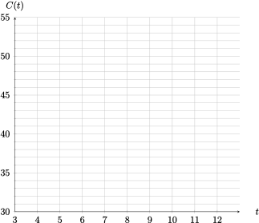
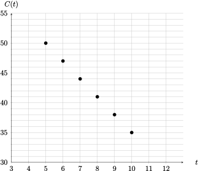
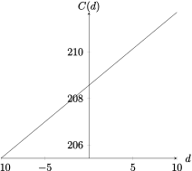
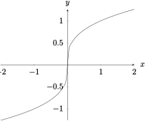
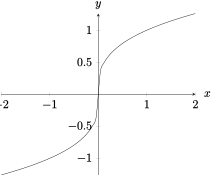
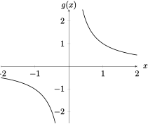

Section 1.2 Mathematical Models: A Catalog of Essential Functions
Objectives
-
Recognize and graph essential functions:
Constant functions
Linear functions
Power functions
Reciprocal functions
Root functions
Polynomial functions
Rational functions
Trigonometric functions
Exponential functions
Logarithmic functions
Identify the basic characteristics of essential functions, including: domain, range, end behavior, roots, asymptotes, \(x-\) and \(y-\)intercepts, slope, symmetry.
Subsection 1.2.1 Before Class
https://mymedia.ou.edu/media/1.2-1/1_s05beatpSubsubsection 1.2.1.1 Linear Functions
Remember that a linear function requires two pieces of information- a starting value (\(b\text{,}\) the \(y\)-intercept), and an amount of incremental change in the independent variable (\(m\text{,}\) the slope of the function). This gives us three ways to describe a linear function:
Verbally: A function with a constant rate of change
-
Graphically: Lines can look like one of four cases:


Algebraically: \(f(x) = mx+b\)
Question 1.2.1.
Given two points \((x_1,y_1)\) and \((x_2,y_2)\text{,}\) how can we find the slope of the line between them?\(m =\dfrac{y_2-y_1}{x_2-x_1}\)
Example 1.2.2.
The following table gives the percentage of new companies which remained open \(t\) years after beginning business.| Years After Opening | 5 | 6 | 7 | 8 | 9 | 10 |
| Companies Still Open (in %) | 50 | 47 | 44 | 41 | 38 | 35 |
- Plot the points on the graph below 
Use the data to find an equation for the line between these points.
Give an interpretation for the slope of \(C(t)\)
- 
\(\displaystyle C(t) = -3t + 65\)
Each year, the percentage of companies still open decreases by 3 percent per year.
Subsubsection 1.2.1.2 Polynomials
Definition 1.2.3. Polynomial.
A function \(P\) is called a polynomial if| Common Polynomials | |||
| Polynomial | Equation | Graph (\(a_n \gt 0\)) | Graph (\(a_n \lt 0\)) |
| Linear | \(a_1x + a_0\) | ||
| Quadratic | \(a_2x^2+a_1x + a_0\) | ||
| Cubic | \(a_3x^3+a_2x^2+a_1x +a_0\) | ||
| Even Degree | \(a_nx^n +\cdots a_1x+a_0 \) (\(n\) even) | ||
| Odd Degree | \(a_nx^n +\cdots a_1x+a_0 \) (\(n\) odd) | ||
Subsubsection 1.2.1.3 Other Functions
Definition 1.2.4. Exponential/Logarithmic Function.
An exponential function is a function of the form \(f(x)=b^x\text{,}\) where the base \(b\) is a positive constant.
A logarithmic function is a function of the form \(f(x)=\log_b x\text{,}\) where the base \(b\) is a positive constant.
Exponential and logarithmic functions have these properties:
| Domain | Range | Asymptotes? | |
| \(f(x)=b^x\) | \((-\infty,\infty)\) | \((0,\infty)\) | \(y = 0\) |
| \(f(x)=\log_b (x)\) | \((0,\infty)\) | \((-\infty,\infty)\) | \(x = 0\) |
Subsection 1.2.2 Pre-Class Activities
Example 1.2.5.
Find an equation for the family of linear functions with slope \(-1\text{,}\) and sketch a few members of the family.
Find an equation for the family of linear functions such that \(f(2) = 1\text{,}\) and sketch a few members of the family.
Which function belongs to both families?
The family is given by \(y = -x+b\text{.}\) Answers will vary on the sketch.
The family is given by \(1=2m + b\text{.}\) Answers will vary on the sketch.
\(\displaystyle y = -x+3\)
Example 1.2.6.
Find an expression for a quadratic function \(f\) if \(f(-2) = 2\text{,}\) \(f(0) = 1\text{,}\) and \(f(1) = -2.5\)Example 1.2.7.
The monthly cost of driving a car depends on the number of miles driven. Casey found that in April, it cost her $350 to drive 450 miles, and in June, it cost her $460 to drive 800 miles. Express your answer exactly (no decimals).Express the monthly cost \(C\) as a function of the distance driven (\(d\)), assuming that a linear relationship gives a suitable model.
Use (a) to predict the cost of driving 1500 miles per month.
Sketch the graph of the linear function. What does the slope represent? Include units.
What does the \(C-\)intercept represent?
Why does a linear function give a suitable model in this situation?
\(\displaystyle C(d) = \dfrac{11}{35}x + \dfrac{1460}{7}\)
680 dollars
-

The slope represents the rate of change of cost (dollars per month)
The base cost of owning/maintaining the car without driving it.
Answers vary.
Subsection 1.2.3 In Class
Subsubsection 1.2.3.1 Power Functions
Definition 1.2.8. Power Function.
A power function is any function of the form \(x^a\text{,}\) where \(a\) is a constant.Example 1.2.9.
Describe the difference between a power function and a polynomial.Example 1.2.10.
We will look at three special power functions.If \(a\) is a positive integer, what kind of functions do we see? Sketch a few examples.
If \(a=\dfrac{1}{n}\) (where \(n\) is a positive integer), rewrite the power function using rules of exponents.
The functions in part (b) are called root functions. Sketch the graph of the power function if \(a=\dfrac{1}{2}\) and \(= \dfrac{1}{3}\text{.}\)
When \(a=-1\text{,}\) we call the power function the reciprocal function. Sketch the graph.
We see the standard polynomial functions. Graphs will vary.
\(\displaystyle x^{a} = x^{1/n} = \sqrt[n]{x}\)
![The graph of \(\sqrt{x}\) on the interval \([-1,1]\)](generated/latex-image/image-28.svg) 
- 
Subsubsection 1.2.3.2 Rational Functions
Definition 1.2.11. Rational Function.
A rational function is a ratio of two polynomials, written as \(f(x) = \dfrac{P(x)}{Q(x)}\text{,}\) where \(P(x)\) and \(Q(x)\) are polynomials.
The domain of a rational function consists of all values \(x\) such that \(Q(x)\neq 0\text{.}\)
Example 1.2.12.
Write the domain of the following functions, in interval notation.\(\displaystyle f(x) = \dfrac{1}{x}\)
\(\displaystyle g(x) = \dfrac{2x^3 - 1}{x^5 + 1}\)
\(\displaystyle h(x) = \dfrac{6x^4 + x^3 - 7x^2 + 6.5029}{x^2 - 9}\)
\(\displaystyle (-\infty,0)\cup (0,\infty)\)
\(\displaystyle (-\infty,-1)\cup (-1,\infty)\)
\(\displaystyle (-\infty,-3)\cup (-3,3)\cup (3,\infty)\)
Subsubsection 1.2.3.3 Algebraic Functions
Definition 1.2.13. Algebraic Function.
A function \(f\) is called an algebraic function if it can be constructed using algebraic operations, such as addition, subtraction, multiplication, division, and taking roots.Example 1.2.14.
Write an example of an algebraic function using at least one of each type of function we have covered so far.Subsubsection 1.2.3.4 Trigonometric Functions
| Basic Trigonometric Functions | ||
| \(\sin x = \dfrac{opp}{hyp}\) | \(\cos x = \dfrac{adj}{hyp}\) | \(\tan x = \dfrac{opp}{adj}\) |
| \(\csc x = \dfrac{hyp}{opp}\) | \(\sec x = \dfrac{hyp}{adj}\) | \(\cot x = \dfrac{adj}{opp}\) |
Here are some useful properties of trigonometric functions
| \(\sin x\) | \(\cos x\) | \(\tan x\) | \(\cot x\) | \(\sec x\) | \(\csc x\) | |
| Domain | \((-\infty,\infty)\) | \((-\infty,\infty)\) | \(x \neq \dfrac{\pi}{2} + \pi k\text{,}\) \(k\in \Z\) | \(x\neq \pi k\text{,}\) \(k\in \Z\) | \(x \neq \dfrac{\pi}{2} + \pi k\text{,}\) \(k\in \Z\) | \(x\neq \pi k\text{,}\) \(k\in \Z\) |
| Range | \([-1,1]\) | \([-1,1]\) | \((-\infty,\infty)\) | \((-\infty,\infty)\) | \((-\infty,1]\cup [1,\infty)\) | \((-\infty,1]\cup [1,\infty)\) |
| Period | \(2\pi\) | \(2\pi\) | \(\pi\) | \(\pi\) | \(2\pi\) | \(2\pi\) |
Knowing the values of the unit circle will make your life much easier; fill it out below.
Common Trig Identities.
| \(\sin^2\theta +\cos^2\theta=1\) | \(\sin(2\theta) = 2\sin\theta\cos\theta\) |
| \(\cos(2\theta) = \cos^2\theta - \sin^2\theta\) | \(\cos(2\theta) = 2\cos^2\theta - 1\) |
| \(\cos(2\theta) = 1-2\sin^2\theta\) |
Example 1.2.15.
Sketch the graph of each trig function over one period. If necessary, sketch any asymptotes the graph has.Example 1.2.16.
Find the domain of the function \(f(x) = \dfrac{3}{2\sin x + 1}\text{,}\) first on the interval \([0,2\pi)\text{,}\) then in general.Subsection 1.2.4 After Class Activities
Example 1.2.17.
Classify each function as one of the types of functions discussed in this section.\(\displaystyle k(t) = t-5+t^2\)
\(\displaystyle \ell(x) = (0.25)^x\)
\(\displaystyle m(y) = \dfrac{1-x}{\sqrt{1-x^2}}\)
\(\displaystyle n(\theta) = \theta^{0.25}\)
\(\displaystyle o(r) = \dfrac{r^3-5r^2 + r^4-1}{r^2 + r+10}\)
Polynomial, algebraic
Exponential
Algebraic
Power, algebraic
Rational, algebraic
Example 1.2.18.
Ecologists have modeled the relationship between the area of a region and the number of species inhabiting the region. In particular, the number of species \(S\) of bats living in and around Austin has been related to the surface area \(A\) of the structure by the equation \(S = 0.3A^{0.5}\text{.}\)A structure near I-35 has a surface area \(A = 10000\) m\(^2\text{;}\) how many species of bat do you expect to find on the structure?
If an overpass has nine species of bats, estimate the area of overpass.
30 species
900m\(^2\)
Example 1.2.19.
Find the domain of the following functions.\(\displaystyle t(k) = \sqrt{k^2-6}\)
\(\displaystyle y(b) = \sec\lrpar{\dfrac{\pi}{2}b}\)
\(\displaystyle h(x) = \dfrac{x+3}{2\sqrt{5-x}}\)
\(\displaystyle (-\infty,-\sqrt{6}]\cup [\sqrt{6},\infty)\)
\(b\neq 2k+1\) for \(k\in \Z\)
\(\displaystyle (-\infty,5)\)
Subsection 1.2.5 Section 1.2 Resources
Subsubsection 1.2.5.1 Essential Functions
Quick Resource from Chegg
https://www.chegg.com/learn/calculus/calculus/mathematical-models-a-catalog-of-essential-functionsAnother Quick Resource
https://mathonweb.com/help_ebook/html/functions_4.htmCommon Graphs in Calculus from Michigan
https://prep.math.lsa.umich.edu/cgi-bin/pmc/crtopic?sxn=14&top=1&stpc=1&crssxn=prep